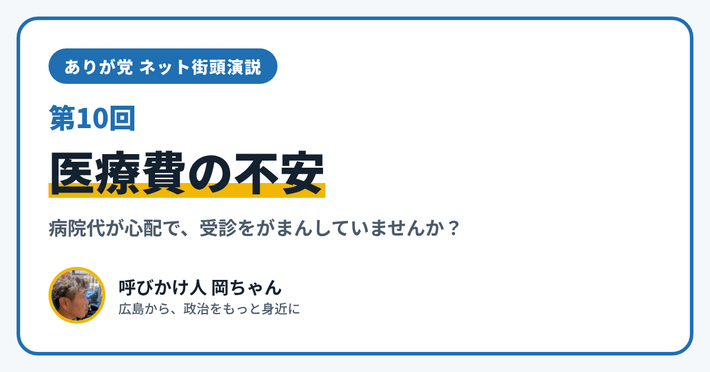

ありが党 ネット街頭演説 第10回｜病院代が心配で、受診をがまんしていませんか？

こんにちは、ありが党の呼びかけ人、岡ちゃんです。今日のネット街頭演説のテーマは「医療費の不安」です。
「病院に行ったら、いくらかかるんだろう」と心配で、受診をあとまわしにしたこと、ありませんか？ 障がいや持病があって通院が多い人にとって、医療費は毎月の暮らしに直結する問題です。
今日は、医療費の負担を軽くするしくみを2つ紹介します。
月の負担に上限がある「高額療養費制度」
1つめは、健康保険の「高額療養費制度」です。
- 病院や薬局で払う1か月の自己負担が、決められた上限額をこえたとき、こえた分があとから戻ってくるしくみです
- 上限額は、年齢や所得によって違います
- マイナ保険証を使うか、前もって「限度額適用認定証」を用意しておくと、窓口での支払いが上限額までですみます
くわしい上限額は、加入している健康保険（国民健康保険なら区役所）に問い合わせると教えてもらえます。
広島市の「重度心身障害者医療費補助」
2つめは、広島市の「重度心身障害者医療費補助」です。
- 対象は、身体障害者手帳1〜3級、療育手帳マルA・A・マルBを持っている人などです（所得制限があります）
- 健康保険の自己負担分を補助してくれます（入院中の食事代などは対象外です）
- 「重度障害者医療費受給者証」と、健康保険の情報がわかるものを病院の窓口で見せると、自己負担なしで受診できます
- 申し込みは、住んでいる区の福祉課です。受給者証は毎年8月1日に更新されます
なお、生活保護を受けている人は、この補助の対象外です（生活保護には、医療費のための別のしくみがあります）。
僕が考えたいこと
僕は、お金の心配で病院に行くのをがまんする人が、ひとりでも少なくなってほしいと思っています。そのためには、まず「こういうしくみがある」と知ることが大事です。制度があっても、知らなければ使えません。どうすれば必要な人に情報が届くのか、みんなで考えたいです。
あなたは、医療費のことで、どんなことに困っていますか？ InstagramのDM（@ayu19841002）や、ありが党のページから、あなたの暮らしの声を聞かせてください。
ありが党は、まだ僕ひとりから始めたばかりです。政治をもっと身近にしたいと思う方、一緒に考えてくれる仲間を探しています。InstagramのDM（@ayu19841002）で気軽に声をかけてください。